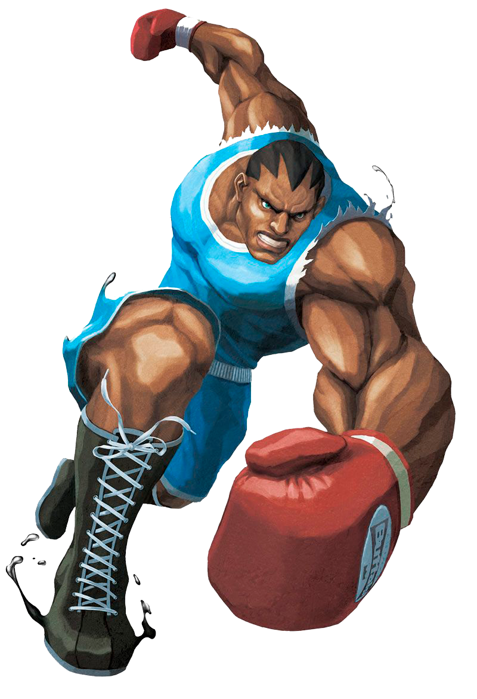

¿Qué es el boxeo?
El boxeo es un deporte donde dos personas se enfrentan a golpes de puño con sus manos cubiertas por guantes y de acuerdo a determinadas reglas. El ganador es aquel que logra derribar a su rival sin que este pueda levantarse antes de una cuenta de diez o que, al término del combate, suma más puntos que el oponente según la opinión de un jurado

Datos Generales
Por lo general el concepto de boxeo, box o pugilismo alude al boxeo inglés (también llamado boxeo irlandés). Existen otras versiones de este deporte con diferentes reglamentos, como el boxeo tailandés (que permite los golpes con los codos, las rodillas y las piernas) y el boxeo japonés (autoriza las patadas pero no los codazos ni los rodillazos).
as peleas de boxeo se llevan a cabo en un cuadrilátero conocido como ring. Estos combates están divididos en secuencias llamadas rounds o asaltos. La cantidad de rounds por evento varía de acuerdo al reglamento.
Cabe destacar que existen diversas entidades que organizan los combates de boxeo y que otorgan títulos. Todas coinciden en dividir a los boxeadores en categorías de acuerdo al peso para que los enfrentamientos sean equilibrados.
El boxeo, más allá de ciertos cambios y actualizaciones, se rige desde 1867 por las reglas de Queensberry, el reglamento que incorporó el uso de guantes, fijó la duración de los rounds en tres minutos e instauró la cuenta de diez segundos.